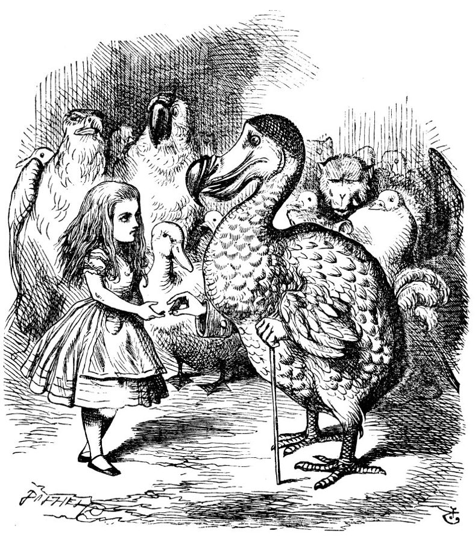
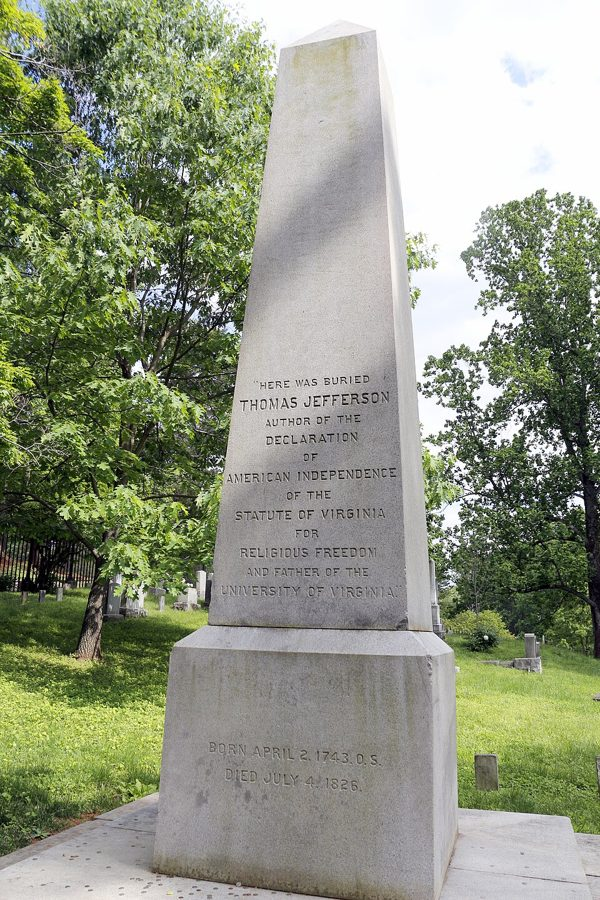
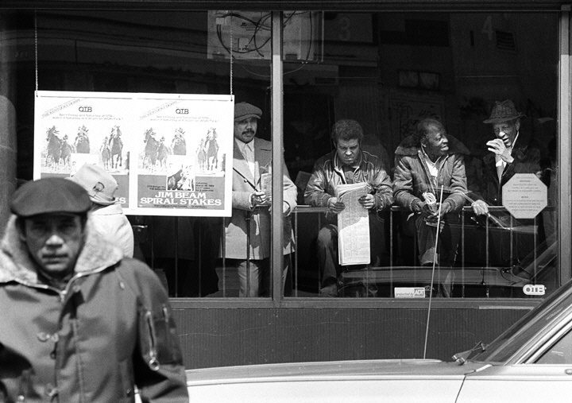

这一章在做什么
这一章问：平等和自由冲突吗？作者的回答是，要看哪一种平等。建国时说的「生而平等」指在上帝和法律面前平等，内战后重心转到机会平等，这两种和自由是一回事。二十世纪兴起的结果平等，要有人来定什么叫「公平」再强制执行，所以和自由冲突。作者拿彩票、基布兹、战后英国、苏联和中国作证据。读的时候抓两条线：三种平等怎么区分；为什么作者说先要自由，平等反而更多。

Tenniel 为《爱丽丝漫游奇境记》（1865）画的插图：一场没有起点终点的赛跑之后，渡渡鸟宣布人人都赢了、人人都有奖，再把爱丽丝自己的顶针当奖品颁给她。§4 用的就是这个场面。John Tenniel，公有领域，维基共享资源 读之前：先下注
第 1 章讲价格有三种功能，其中第三种是「决定收入」，作者在那里说：想留下价格的前两种功能、拿掉第三种，只能退回命令，并预告第 5 章细说。这一章就是那笔账：如果用政府去拉平收入，会发生什么。它和第 4 章（福利国家）一前一后，第 4 章讲具体项目，这一章讲背后的观念；§3 讲到免费教育时，作者说下一章（教育）再细谈。
放眼全世界，贫富差距最大、富人最富穷人最穷的，是哪一类社会？
自由市场最彻底的社会：富人可以放手剥削穷人
刚开始工业化的社会：差距先拉大，富起来以后再缩小
不让市场运行的社会：地位靠出身或靠接近权力来分
差距大小主要看税收和福利，和市场关系不大
靠出口矿产、石油过日子的资源国
父母把房子股票留给孩子，和孩子天生继承了父母的音乐天赋。这两种「起跑线上的不公平」，在伦理上有区别吗？
有区别：财产是制度造成的，天赋是自然的，只该管前者
没区别，两种都该尽量拉平
看不出伦理上的区别；而且旁人也从这种不公平里得益
有区别：财产能一代代越滚越大，天赋只管一代
有区别：天赋还得靠自己苦练，财产是白得的
平等和自由，是同一样东西的两面，还是此消彼长？作者说，答案取决于你说的是哪一种平等。
杰斐逊本人才华出众，还蓄奴。作者怎样解释他写下的「人人生而平等」的本意？§2
机会平等为什么不能按字面理解？作者给的真正意思是什么，你同意吗？§3
继承财产和继承天赋，作者问伦理上有什么区别。他的问题问得公平吗？§4
作者用彩票、知识分子和基布兹说明「支持结果平等的人很少」。这几样证据各有多硬？§5
这一章的论证骨架
这一章按「三种平等」排：§2、§3、§4 各讲一种，前两种是史实和定义，篇幅不长；§4 最长，是论证的中心，中间穿插继承、拳王、赌桌、慈善好几个例子，最容易读散。§5–§7 是三组证据，§8 两段话收尾。
平等和自由，冲突还是一体？
上帝面前的平等 · §2
人人有不可剥夺的权利
机会平等 · §3
没有武断的障碍挡路
结果平等 · §4
人人拿「公平的一份」
与自由一致：同一个价值的两面 · §1
与自由冲突 · §1
谁来定什么算「公平」？奖品从哪来？
只能靠强制：自由没了，平等也没来
§4 还穿插：继承财产与
继承天赋，赌桌和洪泛区
三组证据
谁真的想要？· §5
彩票 · 知识分子 · 基布兹
英国的后果 · §6
新特权 · 违法 · 人才外流
资本主义与平等 · §7
差距最大处恰恰没有市场
结论 · §8
结果平等放在自由前面：两样都落空；自由放在前面：两样都更多
本站画的示意图。§4 里的例子（继承、拳王、赌桌、洪泛区、慈善）都是在给右侧中间那个带底色的框找理由，读的时候问自己：这个例子在支持哪一句。 边读边填：每行一个问题，读到答案就写一两句。只存在你这台设备的浏览器里，别人看不到。
读完了？对照我找到的
本意：紧接着的「造物主赋予不可让渡的权利」；人人平等是指在上帝面前，每个人都不是别人的工具。
机会：人的干劲大释放、社会流动成了日常、慈善事业爆发；还有被讥为「庸俗物质主义」的拜金风气。
冲突：谁来决定什么是「公平」？不按产出分，奖品从哪来、谁去干扫街的活？
风险：谁承担后果，谁才能做决定；别人替你担后果，就会来管你的决定。
言行：政府（一边办彩票一边讲平等）、知识分子（不捐出多余收入）、公众（基布兹没人去，赌城人满）。
后果：铁饭碗的官僚、高薪的工会工人、会钻法律空子的新富翁。
结论：自由社会不阻止人得到特权地位，但不让它制度化，总有别的能人来挑战。
分节地图
原书这一章没有给节编号。§1 是第一个小标题之前的开篇（照抄的是第一段开头几个词），§2–§8 的粗体是书里印的全大写小标题，Kindle 里可以直接搜。每一节下面自动标出纸书页码、在本章录音里大约第几分钟、译本里对应的小节名。建议分两次读；读完一节回来打个勾。
第一次坐下§1–§4 · 约 4700 词 · 三种平等，各讲一遍
“Equality,” “liberty”—what precisely do…约 300 词 五段话预告全章：两种平等和自由一致，第三种冲突。全章的地图，读两遍。 EQUALITY BEFORE GOD约 1000 词 从杰斐逊三十三岁写宣言讲起，接着是托克维尔和奴隶制。抓「平等就是不被当工具」。 EQUALITY OF OPPORTUNITY约 900 词 内战以后的美国：一句法国大革命的口号，自由放任，拜金和慈善。末段提到关税。 EQUALITY OF OUTCOME约 2500 词 全章中心。渡渡鸟、继承、阿里、赌桌、福特、芝加哥慈善。译本删了一句口号（英文第 29 段）和几个国名，读这里请对照英文。 第二次坐下§5–§8 · 约 3100 词 · 三组证据和结论
WHO FAVORS EQUALITY OF OUTCOME?约 1200 词 纽约州的彩票、知识分子的「新阶层」、以色列的基布兹、赌城。语气最辛辣的一节。 CONSEQUENCES OF EGALITARIAN POLICIES约 800 词 战后英国：98% 的税率，新特权阶层，违法和人才外流。留意作者哪几句用了「也许」。 CAPITALISM AND EQUALITY约 900 词 苏联和中国的不平等，自来水和古罗马贵族，穆勒 1848 年的话。译本没有译第 72 段，读这里请对照英文。 CONCLUSION约 200 词 两段话，全章的结论。和 §1 对照着读。
背景：作者默认你知道的事
按在书里出现的顺序排，标题前是节号。书写于 1979 年，书里的「今天」「近来」都是那时候。
§2 杰斐逊、《独立宣言》和他的墓碑Thomas Jefferson（1743–1826）1776 年起草《独立宣言》，后来当了第三任总统。蒙蒂塞洛（Monticello）是他在弗吉尼亚山上自己设计的庄园。他给自己拟的墓志铭只写三件事，不提当过总统。他 1826 年 7 月 4 日去世，正是《独立宣言》发表五十周年那天。他一生拥有数百名奴隶。

蒙蒂塞洛家族墓地里杰斐逊的墓碑，2015 年摄。原碑被游客凿坏，这一座是国会 1882 年拨款、1883 年立起的新碑，原碑后来送给了密苏里大学。碑文就是 §2 说的那三件事。Tony Rice，CC BY-SA 3.0，维基共享资源 §2 托克维尔和《论美国的民主》Alexis de Tocqueville（1805–1859），法国贵族出身的政治思想家。1831 年他和同伴以考察美国监狱为名来美国待了九个多月，回去写成《论美国的民主》（上卷 1835，下卷 1840）。§2 两段缩进的引文出自上卷，作者紧接着引的「对平等的变态爱好」那句出自同一部书。
托克维尔像，Théodore Chassériau 1850 年画。Théodore Chassériau，公有领域，维基共享资源 §2 「民主党」这个名字，和葛底斯堡演说今天的美国民主党把杰斐逊当作创党先贤，他那一派当年叫民主共和党。作者在 §2 挖苦的就是这一点：打着杰斐逊旗号的党，扩张的恰恰是杰斐逊最怕的政府权力。葛底斯堡演说是林肯 1863 年 11 月在内战战场公墓落成时的短讲，开头一句就引了《独立宣言》的「人人生而平等」。
§3 三个说法：人才的前程、大熔炉、东方人「前程向人才开放」一般归在拿破仑名下，意思是官职和军阶按本事而不按门第给，书里写成法文时多了一个 les。「大熔炉」（melting pot）因 Israel Zangwill 1908 年的同名剧作流行，指各国移民在美国融成一体。§3 末尾的 Orientals（东方人）指亚洲移民，1882 年起的《排华法案》就是那条「例外」；这个词现在带冒犯意味，不这么说了。《谢尔曼反托拉斯法》是 1890 年的联邦法律。
§4 渡渡鸟、动物庄园和马克思那句话渡渡鸟的「人人都赢了」出自《爱丽丝漫游奇境记》第 3 章，见本页开头的插图。「所有动物一律平等，但有些动物比别的更平等」出自奥威尔 1945 年的寓言小说《动物庄园》。「各尽所能，按需分配」出自马克思 1875 年的《哥达纲领批判》；第 1 章 §3 已经引过一次。
§4 书里点到的人
Marlene Dietrich 玛琳·黛德丽 德裔美国影星，1930 年代起走红，以一双腿出名。作者拿她说明天生的「不公平」也让观众受益。
Muhammad Ali 穆罕默德·阿里 美国重量级拳王，1964 年第一次夺冠。1979 年书写成时他刚宣布退役，一场大战的出场费以百万美元计。
George Eastman · James Cash Penney 伊斯曼 · 彭尼 前者创办柯达，让普通人用上了胶卷相机；后者创办 J. C. Penney 连锁百货。和福特、爱迪生、洛克菲勒一起，是作者举的白手起家者。
Jane Addams 简·亚当斯 1889 年在芝加哥创办赫尔馆（Hull House），为移民和穷人办夜校、托儿所，1931 年获诺贝尔和平奖。
William Graham Sumner 威廉·格雷厄姆·萨姆纳 耶鲁的社会学家，1883 年的讲演《被遗忘的人》说：A 和 B 商量好让 C 为 D 出力，出钱的 C 就是被遗忘的人。书里把字母换了个位置。
§5 纽约的彩票、场外投注和「数字彩」纽约州 1967 年开办州立彩票，是继新罕布什尔之后第二个这样做的州；1971 年纽约市开了全美第一家合法的场外赛马投注站（OTB），2010 年 12 月关门。「数字彩」（the numbers）是城里街头的非法私彩，猜一个三位数。§5 末尾的 Reno、Las Vegas 是内华达的赌城；新泽西 1976 年公投准许大西洋城开赌场，第一家 1978 年 5 月开业，所以书里说「现在还有」。

1983 年纽约东哈莱姆 116 街的一家 OTB 投注站。作者说，纽约州一边讲平等，一边做广告招人下注，抽的头还比街头私彩狠。Alfred Gonzalez，CC BY 2.5，维基共享资源 §5 新阶层、贵格会和基布兹Irving Kristol 是美国「新保守主义」的代表人物，1975 年起在《华尔街日报》的专栏里写「新阶层」（new class）：靠知识和公共开支吃饭的学者、记者、官员。贵格会（Quakers）是 17 世纪起源于英国的新教教派，许多教徒移居宾夕法尼亚，经商致富的不少。哲学家 Robert Nozick 1978 年在《Reason》杂志上写过以色列基布兹的例子。基布兹（kibbutz）是集体农庄，财产公有、收入平分，第一个建于 1910 年。
1938 年，以色列建国以前，Ein Harod 基布兹的成员在割麦。Zoltan Kluger，公有领域，维基共享资源
§5–§7 200 美元、战后英国、《纽约书评》§5 说 1979 年全世界人均收入大约 200 美元；按世界银行今天的数据，那年全世界人均 GDP 约 2300 美元，书里这个数偏低很多。§6 的英国：1945 年工党上台建福利国家；1974 年劳动所得的最高税率提到 83%，利息股息再加 15% 的附加税，合计 98%；1979 年 5 月撒切尔当选，次月的预算就大幅降税。§7 那位「中国问题研究者」是 Nick Eberstadt，引文出自他 1979 年在《纽约书评》的文章。
这一章的经济学，先用中文过一遍
这一章用到、作者一句带过的几个概念。读之前过一遍，读的时候就不会卡在概念上。
「公平的一份」为什么离不开强制
作者的推理分两步。第一步：「相同」可以量，「公平」量不出来，一旦不按「人人一模一样」来分，就得有人说了算，还得能把多出来的拿走。第二步：收入不跟产出挂钩，谁还多干？谁去当医生、谁去扫街？这其实是第 1 章那句话的反面：价格的「分配收入」功能拿掉了，信息和激励也就跟着失灵，剩下的只有命令。用编程的话说，你把回调函数拔了，就只能改成轮询加强制调度。
风险谁担，主意谁拿
§4 的赌桌和洪泛区是同一个道理：后果自己担，决定就该自己做；后果让别人担，别人就会来管你的决定。经济学把「有人兜底，人就更敢冒险」叫道德风险（moral hazard）。美国 1968 年设立了联邦洪水保险计划，由政府承保洪灾，于是政府也就要管你能不能在河边盖房。作者用它说明：「公平分担」越多，政府插手私人决定也越多，两件事是一起来的。
两种再分配：萨姆纳的 A、B、C、D
同样是政府出面帮穷人，作者在 §4 末尾分出两种。区别不在帮了多少，而在投票决定的人和掏钱的人是不是同一批人。前一种，大家商量好一起出钱，作者说它可能明智也可能不明智，但和自由相容；后一种，多数人投票让少数人出钱，作者说这就是在追求结果平等。
第一种：九成人给自己加税
顶层 10%
中间 80%
底层 10%
税款
投票的人就是掏钱的人
第二种：八成人投票让一成人掏钱
顶层 10%
中间 80%
投票，不掏钱
底层 10%
税款
投票的人不是掏钱的人
掏钱的人
不掏钱的人
萨姆纳的说法：几个人商量好，决定另一个人该为别人做什么 · §4
本站画的示意图。作者说左边和自由相容，右边是在追求结果平等，「与自由完全对立」。两种都可能帮到穷人，作者在意的是谁替谁做主。 边际税率：98% 是什么意思
累进所得税（graduated income tax）是收入越高、税率越高，而且是分段计：只有超过某条线的那一部分才按高税率交。所以「最高税率 98%」说的是：一位富人再多拿 100 英镑股息，98 英镑交税，自己留 2 英镑。作者关心的就是这「最后 100 英镑」：留下 2 英镑，还有谁愿意去多挣？更可能的是请会计、把钱挪到海外，这就是 §6 说的新富翁。书里说的 loopholes（漏洞）是税法里让纸面税率打折的各种条款。
英文 译本译作 一句话 equality before God / personal equality 上帝面前的平等 / 个人平等 每个人都有不可剥夺的权利，不被当作别人的工具。§2 equality of opportunity 机会平等 没有出身、肤色、宗教之类武断的障碍挡路，能走多远看本事。§3 laissez-faire / free enterprise 自由放任 / 自由企业 内战后美国经济政策的口号：政府少管，人人可以入行开业。§3 social mobility （社会各阶层之间的）流动 人在社会阶梯上能上能下。§3 equality of outcome 结果平等 人人的收入和生活水平都该一样或「公平」。作者说它和自由冲突。§4 fair shares for all 公平分配 结果平等的现代口号，作者问：谁来定什么算公平。§4 incentive 动力 / 激励 促使人去干活、去冒险的好处。§4 venture capital 风险投资 投给新办的、可能血本无归的企业的钱。§4 philanthropy 慈善事业 私人出钱办的医院、大学、博物馆、救济机构。§4 egalitarian 平等主义者 主张拉平收入的人。§5 redistribution （财富）再分配 通过税收和转移支付把收入从一部分人挪给另一部分人。§5 graduated income tax 累进所得税制 收入越高税率越高。§5 loopholes （译本未单独译出） 税法里能合法少交税的空子。§5 property income / “earned” income 财产（所得）/ 个人所得 利息、股息、租金 / 工资薪金。英国对前者多征一道税。§6
这一章的译本有几处要留心。一是 finish the race at the same time（大家同时到终点）被译成了「结束竞争」，作者的比喻没了。二是 §5 贵格会那句俗语，do good 是行善，doing well 是发了财，译本作「以作恶而终」，意思弄反了。三是删改：§4 删了一句口号（第 29 段）和几个国名（第 32 段），§7 第 72 段整段没有译，前后几处国名也换成了笼统的说法，作者的「大错特错」（Nothing could be further from the truth）被软化成「值得商榷」。读这几节建议对照英文。
词与短语
读英文时用；这一章读译本的话可以跳过。词条按在书里出现的顺序排，按节分组；读一节之前先把这一节的过一遍，读的时候就不用停。斜体小字是原句里连续的几个词，在 Kindle 里搜它就能找到那一句。标着「每个字都认识」的，是字面意思会把你带偏的。
§1 “Equality,” “liberty”—what precisely do…
climate of opinion
… shaped the intellectual climate of opinion …
（一个时代的）思想风气、舆论气候
occupy the center of the stage
… slavery occupied the center of the stage. …
成为头号议题
arbitrary obstacles
… prevented by arbitrary obstacles from using …
没有正当理由的障碍
arbitrary 在这里是「武断的、凭身份而不凭本事的」，不是「随意的」。全章反复出现。
an end in himself
… be regarded as an end in himself. …
（人）本身就是目的
end 是目的，不是结尾。意思是人不是供别人达成目的的工具，这是康德的说法。
level of living
… the same level of living or of …
生活水平
今天多说 standard of living。
finish the race at the same time
… finish the race at the same time. …
（所有人）同时冲过终点
作者给结果平等打的比方：不是不许比赛，是要求大家一起到终点。§4 又用了一次。
§2 EQUALITY BEFORE GOD
hardly an average man
… of Virginia—hardly an average man. …
绝不是个普通人
往轻里说：前面列了一长串头衔，这里只淡淡一句。
endowed by their Creator
… endowed by their Creator with certain …
由造物主赋予
《独立宣言》原文，美国人张口能背。
unalienable rights
… with certain unalienable rights; that among …
不可让渡、不可剥夺的权利
宣言用的是旧拼法，今天多写 inalienable。
in and of himself
… is precious in and of himself. …
就其本身而言
serve one’s own purposes
… entitled to serve his own purposes …
为自己的目标而活
serve 不是「服务」别人，是成全自己的目的。和后半句 instrument（工具）对着读。
unbridled rule
… give a majority unbridled rule. …
不受约束的统治
bridle 是马笼头。
Bill of Rights
… the U.S. Bill of Rights designed to …
《权利法案》（美国宪法前十条修正案）
bill 在这里是法案，不是账单。
framers
… The goal of the framers of …
（宪法的）起草者、制宪者
frame 当动词是拟定、制定。
promote the general welfare
… country and promote the general welfare …
增进公共福利
美国宪法序言里的话，后来常被拿来为扩大联邦职能辩护。
by no means an uncritical admirer
… by no means an uncritical admirer, …
绝不是一味叫好的人
双重否定：by no means（绝不）+ uncritical（不加批评的）。
carried too far
… that democracy carried too far might …
（民主）推行过了头
depraved taste for equality
… a depraved taste for equality, which …
对平等的变态嗜好
托克维尔的话：不是把弱者抬上去，而是把强者拉下来。
striking testimony
… It is striking testimony to the …
有力的证明
the Democratic party
… the Democratic party of the United …
（美国）民主党
作者在玩字眼：大写的 Democratic 是党名，小写的 democracy 是民主制度。作者说，这个党扩张的恰恰是杰斐逊眼里民主最大的威胁。
correspond to one’s preaching
… always correspond to their preaching. …
（做的）和说的一致
preaching 本是布道，这里泛指嘴上宣扬的道理。
agonize about
… He agonized repeatedly about slavery, …
为……苦恼、纠结
little wonder
… Little wonder that the early decades …
难怪
= no wonder。little 在这里表否定。
§3 EQUALITY OF OPPORTUNITY
dissolute, improvident
… another has dissolute, improvident parents. …
放荡的、不顾将来的
a career open to the talents
… a career open to the talents. …
前程向有才能的人敞开
the talents 指有才能的人，不是才能本身。法文原句见「背景」。
spell out
… simply spells out in more detail …
把（意思）讲明白、展开说
不是拼写。
by the same token
… and, by the same token, sacrifices …
同样道理，同时也
melting pot
… concept of a “melting pot” reflected …
大熔炉
not an unmixed blessing
… not been an unmixed blessing. …
并非有百利而无一害
往轻里说，意思是「有不少坏处」。下一章（教育）展开。
catchwords
… The catchwords were free enterprise, …
口号、时髦话
subject only to
… subject only to the agreement of …
只受……的限制
subject to 是「以……为条件」，不是「主题」。
touchstone
… or nationality, was the touchstone. …
试金石，衡量标准
vulgar materialism
… sneered at as vulgar materialism—an …
庸俗的物质主义
sneer at 是嗤之以鼻。说这话的是自命为文化精英的人，不是作者。
the almighty dollar
… on the almighty dollar, on wealth …
万能的金钱
英语里讽刺拜金的老说法。
the seal of success
… the symbol and the seal of success. …
成功的凭证
seal 是印章，盖了章就算数。
a plethora of
… a plethora of charitable organizations …
大量的、多得数不过来的
extralegal arrangements
… But extralegal arrangements continued to …
法律之外的安排（行规、私下约定）
extralegal 是「法律管不到的」，不一定违法。
the “right” families
… born in the “right” families, …
「体面」的家庭
加引号表示讽刺：社会认为对的，作者并不认同。后面的 right color、right religion 同理。
enshrine
… Manufactures had enshrined tariff protection for …
把……奉为定规
本义是供进神龛。
Orientals
… except only for Orientals. …
东方人（指亚洲移民）
现在不这么说了，有冒犯意味，今天说 Asians。
stop at the water’s edge
… equality stops at the water’s edge—an …
（平等）到国境线为止
化用美国政治的老话 politics stops at the water’s edge（国内吵归吵，对外一致）。作者说今天主张结果平等的人也只拉平国内。
§4 EQUALITY OF OUTCOME
gain ground
… has been gaining ground in this …
越来越占上风
an article of religious faith
… become an article of religious faith: …
宗教信条般不容置疑的东西
article 在这里是「条款、信条」。
rations
… have identical rations of each separate …
配给的定量
if not impossible
… is difficult, if not impossible, to …
就算不是不可能，也很难
fair shares for all
… “Fair shares for all” is the modern …
人人得到公平的一份
in the eye of the beholder
… is in the eye of the beholder. …
各人看法不同，没有客观标准
化用俗语 beauty is in the eye of the beholder（情人眼里出西施）。
more equal than others
… some animals are more equal than others …
比别人更平等
《动物庄园》里的名句，用来挖苦管分配的人自己不在分配之内。
plague
… This conflict has plagued every attempt …
（长期）困扰
overriding principle
… the overriding principle of social organization. …
压倒一切的原则
by any criterion
… wide inequality persists by any criterion; …
不管用什么标准衡量
share the same fate
… have shared the same fate to …
落得同样的下场
moral fervor
… Much of the moral fervor behind …
道德上的热忱
set someone up in a business
… you can set him up in a business …
出钱让他开一门生意
set up 在这里是「扶持起来」，比较第 1 章的 set up as（开业当……）。
over and above
… money to spend over and above taxes, …
在……之外，（交完税）剩下的
riotous living
… spend it on riotous living but …
花天酒地
riotous 和 riot（暴乱）同根，这里是放荡无度。出自英王钦定本《圣经》浪子的故事。
simplistic formulas
… by such simplistic formulas as …
过于简单化的公式
let alone
… to the talented, let alone to those …
更不用说
rectify what nature has spawned
… can rectify what nature has spawned. …
纠正天生造成的（不公）
spawn 本指鱼产卵，这里是「造出来」。
the lowest man on the totem pole
… the lowest man on the totem pole …
地位最低的人
图腾柱上的形象从上到下排，在美国俗语里最下面的就是最不起眼的。
arduous regimen
… undergo the arduous regimen of training …
艰苦的（训练）规程
a game of chance
… considering a game of chance, for …
碰运气的游戏，赌博
baccarat（百家乐）是赌场里的纸牌游戏。
piles of chips
… with equal piles of chips, but …
一摞摞筹码
chips 在赌桌上是筹码，不是薯片。
take all the fun out of
… would take all the fun out of …
让……一点意思都没了
cross the street against the traffic
… cross the street against the traffic, …
不顾来往车辆横穿马路
security
… buy one security rather than another. …
证券（股票、债券）
security 作可数名词是证券，不是安全。译本在这里作「保险」，不对。
lay down rules
… Will he not lay down some …
定下规矩
floodplain
… your house on a floodplain? …
河漫滩，易涨水的低地
go hand in hand with
… has gone hand in hand with …
和……同步发生
the Henry Fords
… gave the Henry Fords, the Thomas …
亨利·福特这样的人
人名加 the 再变复数，指「这一类人」，不是福特一家。译本译作「家族」，不对。
captains of industry
… inventors and captains of industry undertook. …
实业巨头
captain 在这里是领袖，不是船长。和第 1 章的 robber baron 是一对褒贬相反的说法。
go in with one’s eyes open
… went in with their eyes open. …
明知有风险还去干
benefactions
… numerous private benefactions which are …
捐赠，善举
give the flavor of
… may give the flavor of the outpouring …
让人领略一下……的风貌
flavor 不是味道，是「大致的样子」。
pork and Plato
… a strange combination of pork and Plato. …
猪肉和柏拉图（又俗又雅）
芝加哥当年以屠宰和肉类加工闻名，又在同一时期办起了大学、图书馆和乐团。
settlement house
… many settlement houses established throughout …
睦邻服务所（社区服务中心）
settlement 在这里不是定居点：受过教育的人「住进」贫民区，就地办夜校、托儿所。
all the difference in the world
… is all the difference in the world …
天差地别
antithetical to
… is entirely antithetical to liberty. …
与……截然对立
§5 WHO FAVORS EQUALITY OF OUTCOME?
belie
… The talk is belied alike by …
（行为）证明（话）是假的
be belied by：被……戳穿。
preambles of legislation
… the preambles of legislation. …
法律的序言（开头说明立法目的的部分）
espouse
… most ardently espouse egalitarian sentiments, …
拥护，信奉
stronghold
… correctly regarded as a stronghold of …
大本营
off-track betting
… facilities for off-track betting on races. …
场外投注（不去赛马场也能下注）
track 是赛道。译本作「出格的活动」，误解了 off-track。
the “numbers” game
… to suppress the “numbers” game, which, …
数字彩（街头的非法私彩）
as it happens
… which, as it happens, offers better odds …
说来也巧，恰好
odds 是中奖的机会。作者只是顺带一提私彩赔率更好，不是说政府因此打压它。
national pastime
… wagering is a national pastime and …
全民的消遣
practice what one preaches
… practice what so many of them preach. …
说到做到，身体力行
on a do-it-yourself basis
… promoted on a do-it-yourself basis. …
自己动手（不必等政府）
rental value of an owned home
… the rental value of an owned …
自住房的租金价值
住自己的房子，相当于每月省下一笔房租，这也是一种收入。
rhetoric
… as most egalitarian rhetoric suggests …
说辞，高调
saw
… the old, if unfair, saw about …
老话，俗语
不是锯子。if unfair：虽然不太公道。
do good / do well
… to do good, and ended up doing well. …
行善 / 发了财
一字之差的文字游戏：来新大陆是为了做好事，结果日子过得很好。译本作「以作恶而终」，意思反了。
a drop in the ocean
… is but a drop in the ocean, …
沧海一粟，杯水车薪
word-deep
… of outcome is word-deep receives …
只停在嘴上
仿 skin-deep（只有皮肤那么深，肤浅）造的词。
opprobrium
… reflect the opprobrium that a predominantly …
鄙视，恶名
visit on
… society visits on such communes and …
把（恶名、惩罚）加在……身上
visit 在这里不是拜访，是《圣经》式的「降（灾）于」。
command approbation
… social status and commands approbation. …
赢得赞许
command 在这里是「博得」，不是命令。
upper estimate
… be regarded as an upper estimate of …
上限的估计
graduated
… introduction of graduated state income taxes …
累进的
不是毕业。像刻度一样一档一档往上。
at least on paper
… highly graduated, at least on paper, …
至少纸面上如此
on this showing
… On this showing, there is at …
照这些情况看
we venture to suggest
… However, we venture to suggest that …
我们斗胆说一句
客气的说法，后面跟的往往是辛辣的话：赌城的人气和《纽约时报》社论一样能代表民意。
§6 CONSEQUENCES OF EGALITARIAN POLICIES
take from the rich and give to the poor
… to take from the rich and give …
劫富济贫
“earned” income
… 83 percent on “earned” income, …
劳动所得（工资薪金）
英国税法的术语，和 unearned income（利息、股息等非劳动所得）相对。作者加引号，因为他不认为利息就不是挣来的。
quite properly
… were quite properly offended by the …
完全有理由地
作者在这里承认英国旧的阶级结构确实令人反感。
downtrodden
… represent the most downtrodden workers but …
受压迫的，被踩在脚下的
aristocrats of the labor movement
… the aristocrats of the labor movement; …
工人运动里的贵族
指工资最高的那部分工会会员。第 8 章细讲。
greater equity, hardly
… yes; greater equity, hardly. …
更公平了吗？谈不上
equity 在这里是公平，不是股权。和前半句的 yes 对仗。
better one’s condition
… every man to better his condition” …
改善自己的处境
better 当动词用。斯密的原话，作者说 condition 不止是物质。
naked interest
… in the naked interest of one …
赤裸裸的私利
crude criminality
… growth of crude criminality in Britain …
粗暴的犯罪
hard as it may be to believe
… Hard as it may be to believe, …
虽然很难相信
形容词 + as 开头的倒装，表让步。作者自己也知道这个推断大胆，后面用了 may well。
much to the benefit of
… much to the benefit of the …
让……大为得益
§7 CAPITALISM AND EQUALITY
gross inequities
… there are gross inequities of income …
严重的不公
gross 在这里是「严重的、明摆着的」，不是毛重，也不是恶心。
grinding poverty
… the grinding poverty suffered by others. …
压得人喘不过气的贫困
nothing could be further from the truth
… Nothing could be further from the truth. …
大错特错
字面是「没有比这更远离真相的」。
a country of two nations
… Russia is a country of two nations: …
一个国家，两个截然不同的阶层
nation 在这里指一群过着同样生活的人。英国首相迪斯雷利 1845 年的小说《西比尔》就用「两个民族」形容英国的贫富。
Politburo
… they’re only for the Politburo. …
（苏共中央）政治局
no doubt he deserves it
… and no doubt he deserves it. …
他也确实该拿这么多
反讽，笑点在下一句：美国工头只怕被开除，苏联工头还怕被枪毙。
a perceptive student of
… A perceptive student of China writes …
一位眼光敏锐的……研究者
student of 某领域 = 研究它的人，不是学生。
running servants replaced running water
… running servants replaced running water. …
跑腿的仆人顶替了自来水
running water 是自来水，running servants 是跑来跑去的仆人，一个词两个意思。
domestic retainers
… leading artists as domestic retainers. …
家里供养的门客、家臣
retainer 是旧时大户人家的随从。
ready-to-wear
… Ready-to-wear clothing, supermarkets—all these …
成衣（不用量身定做）
redound to the benefit of
… have redounded primarily to the benefit …
最终有利于
prerogative
… the exclusive prerogative of the rich …
特权，专有的权利
drudgery
… same life of drudgery and imprisonment, …
苦役般的劳作
穆勒 1848 年的话。
backbreaking toil
… engaging in backbreaking toil are people …
累断腰的苦活
for sport
… who are doing it for sport. …
为了锻炼、好玩
sport 在这里是消遣，不一定是体育比赛。
§8 CONCLUSION
a happy by-product
… as a happy by-product, end up …
一个令人高兴的副产品
become institutionalized
… privilege from becoming institutionalized; they …
固化成制度
到这里先停下，去读原书 下面是读完再看的：你押的注、反对作者的人怎么说、四十多年后的事实、值得细读的句子和理解检查。先看了，读书时就只是在找答案。
读完：回到你的赌注
作者押的是第三项（§7）：哪里不让自由市场运行，哪里贫富差距就最大。他分两类：靠出身定地位的社会（中世纪欧洲、独立前的印度、当时南美的大部分）和靠接近政府定地位的计划经济（苏联、中国、独立后的印度）。证据是苏联的特供商店和政治局专车、工头和工人的工资差，以及一位美国学者对中国收入分配的估计。读的时候可以问自己：他比的是收入差距，还是普通人的生活水平？这两样在他的论证里是不是混在一起了？
作者押的是第三项（§4）：他承认富家子女的优势「当然不公平」，但问继承财产和继承音乐、体力、数学天赋在伦理上有什么不同；又从父母的角度问，花钱供孩子读书、出钱让他开店、给他留遗产，这三种有何区别。接着他说我们还从天生的不公平里得益：没有阿里的天赋，千百万人就看不到那些比赛。他也说这些伦理问题「微妙而复杂」，不肯用一句「公平分配」打发。你押的若是第一或第四项，可以想想：作者有没有正面回答「财产会越滚越大」这一点？
另一边怎么说
这是一本立场鲜明的书，书名的副题就叫 A Personal Statement（个人声明）。这里摆几种不同意作者的看法和后来的证据，不替谁裁决。
§4 继承天赋那一段，正撞上 1970 年代政治哲学最大的一场争论。哈佛的 John Rawls 在《正义论》（A Theory of Justice，1971）里说，天赋和出身一样是碰运气得来的，在道德上不能算「应得」；他主张社会把天赋的分布看作一种公共资产，不平等只有在对处境最差的人也有利时才说得过去。这条「差别原则」不要求结果完全平等，但要求按结果来检验制度。他在哈佛的同事 Robert Nozick 在《无政府、国家与乌托邦》（1974）里反驳：观众自愿付钱看篮球明星 Wilt Chamberlain 打球，他因此暴富，任何事先设定的分配模式都得不断干涉人们的自愿交易才能维持。作者在 §4 用阿里讲的道理，和 Nozick 的例子几乎一样；§5 引的基布兹数字也出自 Nozick。
核对于 2026-10。依据：斯坦福哲学百科「John Rawls」词条；Nozick《无政府、国家与乌托邦》第 7 章的通行介绍。
斯坦福的经济学家 Ran Abramitzky 在《基布兹之谜》（The Mystery of the Kibbutz，2018）里专门研究了作者在 §5 用的这个例子。他在 2004 年的论文里用 1983 和 1995 年的以色列人口普查追踪个人，发现离开基布兹的人受教育程度和能力都偏高，进来的人偏低，正是平均分配会造成的「人才外流」，这一半支持作者。另一半是：基布兹在这种压力下维持了近一个世纪，他的书就是在解释它们怎么做到的。1980 年代的债务危机以后，许多基布兹陆续改了制度：按《耶路撒冷邮报》2010 年初报道的海法大学调查，到 2009 年底约 72% 已改成按工作发不同的工资，仍然实行集体平均分配的只剩约四分之一。
核对于 2026-10。依据：普林斯顿大学出版社《The Mystery of the Kibbutz》介绍页（2018 年 2 月）；Abramitzky 2004 年 11 月的工作论文（2009 年刊于 Journal of Public Economics）；《耶路撒冷邮报》2010 年 1 月 25 日的报道及海法大学基布兹研究所 Shlomo Getz 的调查。
§6 说英国追求平等拖慢了增长。经济史学者 Nicholas Crafts（2012 年发表于《Explorations in Economic History》）认为，1930–1970 年代竞争太弱拖累了英国的生产率，1970 年代以后竞争加强，是英国结束相对衰落的关键因素之一。他找的病根是竞争不足，而不是收入拉平。另一边，英国财政研究所（IFS）的数据显示，1980 年代英国收入差距急剧扩大，基尼系数从 1979 年约 0.25 升到 1991 年约 0.34，是近代英国最大的一次。Thomas Piketty、Emmanuel Saez 和 Stefanie Stantcheva（2014）比较 18 个发达国家后发现：最高税率降得越多的国家，顶层 1% 的收入份额涨得越多，而顶层份额上涨并没有带来更快的增长。
核对于 2026-10。依据：Crafts，British relative economic decline revisited（Explorations in Economic History 第 49 卷，2012）；IFS 关于英国收入不平等的报告；Piketty、Saez、Stantcheva，NBER 工作论文 w17616，2014 年刊于 American Economic Journal: Economic Policy。
对照今天
这本书成书于 1979 年，1980 年出版。每张卡片拿书里的一个说法，看后来的事实怎么说：先摆书里怎么写，再看成书时的情况，最后是今天。卡片左上角是本站的结论：
成立 后来的事实印证了这个说法部分成立 一部分对，一部分被后来的事改了被改写 后来的事实推翻了它，或者完全变了样书里的说法：自愿选择结果平等的人，最多也就 5% 左右
书里 基布兹人人可以自由进出、社会地位又高，可住在基布兹的犹太人从来没超过约 5%；作者把它当作「自愿选择平等的人」的上限（§5）。
当时（1980） 基布兹人口占以色列人口的比例建国后一直在降：1948 年底约 5.4 万人，占全国人口约 6%（只算犹太人口，比例还要更高）。
今天 建国前后的峰值其实略高于书里的 5%，这一点书里说少了。但此后一路下降，2000 年约 11.8 万人，只占全国人口约 2%；更要紧的是，大多数基布兹自己放弃了收入平分，2009 年底仍守着集体模式的约四分之一。「自愿的平等社区很少、很难维持」这一半，后来的事实是支持的。核对于 2026-10。依据：Chaim I. Waxman，「Kibbutz」词条，Encyclopedia of the Modern Middle East and North Africa（2004）；《耶路撒冷邮报》2010 年 1 月 25 日的报道。
书里的说法：自由社会里，今天的弱势者有机会成为明天的特权者
书里 自由社会不阻止人取得特权地位，但不让它制度化；自由意味着多样，也意味着流动（§8）。
当时（1980） 1940 年出生的美国人到 1970 年满三十岁，约九成比父母同龄时挣得多。
今天 斯坦福的 Raj Chetty 等人（《科学》，2017）算出：子女收入超过父母的比例，从 1940 年出生的约 90% 降到 1980 年代出生的约 50%，五十个州都在降。他们 2014 年的另一项研究发现，按收入排名算的代际流动性，1971–1993 年出生的几代人几乎没有变化；但因为收入差距拉大了，生在哪个家庭的影响比过去大。流动还在，「绝对的向上」已经少了一半。核对于 2026-10。依据：Chetty 等，The Fading American Dream（Science 第 356 卷，2017 年 4 月）；Chetty 等，Is the United States Still a Land of Opportunity?（NBER w19844，2014）。
书里的说法：贫富差距最大的，是不让自由市场运行的社会
书里 苏联是「一个国家两个民族」，中国的收入差距可能比不少市场经济国家还大（第 72 段，译本没有这一段，请对照英文）；凡是自由市场运行的地方，普通人都过上了从前做梦也想不到的日子（§7）。
当时（1980） 中国 1978 年底刚开始改革。十年后作者在 1990 年版序言里写道，十年前很多人还相信社会主义，如今世上几乎没人信了。
今天 两半走向不同。普通人这一半：世界银行 2022 年的报告说，四十年来中国按每天 1.9 美元标准计的极端贫困人口减少了近 8 亿，占同期全球减贫的近四分之三，主要发生在市场化以后。差距这一半：中国国家统计局 2013 年首次公布的基尼系数，2008 年达到 0.491 的高点，2012 年为 0.474；今天世界上收入差距最大的，是南非、纳米比亚这类市场经济国家。核对于 2026-10。依据：世界银行 2022 年 4 月 1 日新闻稿《Four Decades of Poverty Reduction in China》；国家统计局 2013 年 1 月公布的 2003–2012 年基尼系数；世界银行基尼系数数据。
值得停下来的句子
Equality and liberty were two faces of the same basic value—that every individual should be regarded as an end in himself.— §1，开篇第四段。本站译：平等和自由是同一个基本价值的两面：每个人都应当被看作目的本身。
全章的出发点。two faces of the same basic value 是比喻，破折号后面是这个 value 的内容。should be regarded as 用被动：不是「每个人是目的」这个事实，而是「应当被这样看待」这条规范。an end in himself 的 end 是目的，和后面 §2 说的 instrument（工具）对着读。整章的结构就是看三种平等里，哪种守住了这句话，哪种背离了它。
Life is not fair. It is tempting to believe that government can rectify what nature has spawned.— §4，讲完继承之后。本站译：人生本来就不公平。人们很容易相信，政府能纠正老天造成的东西。
四个词的短句先下结论，后一句用 it is tempting to believe（很容易让人相信）引出要反驳的想法，tempting 本身就暗示「诱人但不对」。作者没有否认不公平，他否认的是政府能修好它。下一句（这里不引）立刻调头：我们其实从这种不公平里得益不少。译本在这里加了一句发挥，读译本时注意原文只有这两句。
A society that puts equality—in the sense of equality of outcome—ahead of freedom will end up with neither equality nor freedom.— §8，全章结论的第一句。本站译：一个把平等（结果平等意义上的）放在自由之前的社会，最后既得不到平等，也得不到自由。
破折号中间的插入语是全章的关键限定：作者反对的只是结果平等，不是平等本身。puts A ahead of B 是「把 A 排在 B 前面」，结尾 neither … nor … 两样都落空。下一段是它的镜像：把自由放在前面，两样都更多。两段对着读，就是本页骨架图的底部。
检查一下理解
先在心里答，再点开。答错的那题，回书里把对应那一节再读一遍。
1.（§1）作者说三种平等里，哪两种和自由一致？为什么？ 上帝面前的平等和机会平等。它们和自由都出自同一个价值：每个人本身就是目的，不能被拿去成全别人的目的。结果平等则要有人替别人决定所得，所以冲突。
2.（§2）杰斐逊明知人与人能力不同，「人人生而平等」又是什么意思？ 意思是在上帝面前平等：每个人都有不可剥夺的权利，有权按自己的目标生活。精英存在，但精英和多数人都无权统治别人。
3.（§3）作者为什么说美国人重视赚钱，和机会平等有关？ 不再按出身和门第评价人，就得按表现评价，而积累的财富是最现成的表现尺度。作者引托克维尔说过类似的话。
4.（§4）百家乐的例子想说明什么？ 一晚上下来输赢不均，但如果规定散场时赢家退钱给输家，游戏就没意思了，输家也不会再来。现实里人们天天在冒险，谁担后果谁做决定；让别人兜底，就得让别人来管。
5.（§4）萨姆纳的例子里，两种政府援助差在哪？ 一种是九成人给自己加税帮最底层一成，另一种是八成人投票让最上层一成出钱帮最底层一成。前者和自由相容，后者是在追求结果平等。
6.（§5）作者为什么拿以色列的基布兹而不拿美国的公社作证据？ 美国的平等主义者可以说公社少是因为资本主义社会歧视它们。以色列不同，基布兹受尊敬、成员地位高、进出自由，可加入的人仍然很少，所以更能说明自愿选择结果平等的人有多少。
7.（§6）作者说英国追求平等失败的根本原因是什么？ 不在于措施选错或执行不好，而在于违背了人改善自己和子孙处境的本能。人们于是规避法律、违反法律或者离开英国。
用一句话说这一章（写给一个没读过的朋友）：
精彩回顾
读过又忘了，从这里想起来。挑的是这一章最值得记住的例子和观点，不按原书顺序；每条后面是节号，想细看就回书里那一节。全书各章的这一节都收在全书回顾 。
一句话： 机会平等和自由是一回事，结果平等要靠强制；把自由放在前面，平等反而更多。
人人都有奖 渡渡鸟说大家都赢了；一群声音问：那谁来发奖？作者说，结果平等的麻烦就在这一问。
§4 阿里的出场费 阿里一晚挣几百万当然不公平。可要是只许他拿码头工人一天的工钱，他不会去苦练，观众也就看不到那些比赛了。
§4 赢家退钱 百家乐散场时要赢家把钱退给输家，游戏就没意思了，输家下次也不来。谁担后果，谁做决定。
§4 纽约州的彩票 平等主义的大本营，州政府却大做广告卖彩票、办场外赛马投注，还打压赔率更好的街头私彩。
§5 基布兹的 5% 在以色列，基布兹受尊敬、进出自由，可选择住进去的犹太人从没超过约 5%。作者说这是自愿选平等的上限。
§5 98% 的税率 战后英国最高税率到了 98%，作者说结果是造出新特权者：铁饭碗的官僚、高薪工会工人、会钻空子的新富翁。
§6 苏联工头怕枪毙 苏联工厂里工头和工人的工资差比美国还大。作者说他也该拿这么多：美国工头只怕被开除，苏联工头还怕被枪毙。
§7